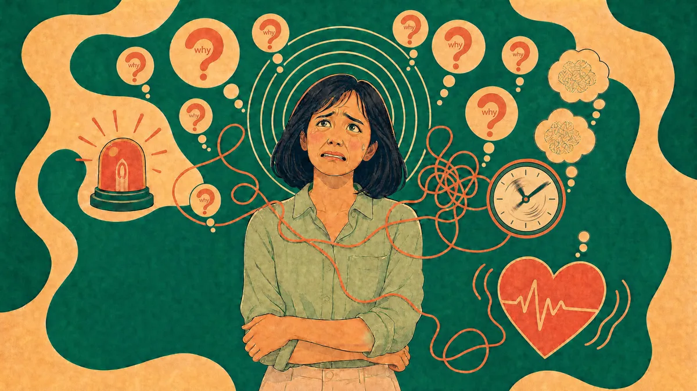

![Symptom Compass]()
Why Do I Feel Anxious All the Time? Causes, Signs and What Might Help

Feeling anxious most of the time can be exhausting and confusing, especially when you can't pinpoint why. This guide explains what constant anxiety can feel like, some common reasons it happens, when to get help, and how the main types of support compare, so you can work out what might suit you.
If you've been asking yourself "why do I feel anxious all the time?", you're not alone, and you're not overreacting. Anxiety that rarely switches off is one of the most common reasons people look for help with their mental health.
Anxiety itself is a normal human response. It's your body's way of preparing you to deal with a threat. But when it's there most days, attaches itself to one worry after another, or arrives without any obvious reason, it can start to affect your sleep, work, relationships and enjoyment of life.
This article can't tell you exactly what's going on for you, and it isn't a diagnosis. What it can do is help you make sense of what you're experiencing and see the different directions worth exploring.
Is It Normal to Feel Anxious All the Time?
Everyone feels anxious sometimes, for example before an interview, during a health scare or when money is tight. That kind of anxiety usually eases once the situation passes.
Constant anxiety is different. People often describe it as:
- a background sense of worry or dread that's there most days
- moving from one worry to the next, so that as soon as one is settled another appears
- feeling on edge or unable to relax, even when nothing is obviously wrong
- finding it hard to remember the last time you felt properly calm
If this sounds familiar, it doesn't mean something is "wrong with you". It's a sign that your anxiety may be working overtime, and that some support could help.
Common Signs of Constant Anxiety
Anxiety affects both the mind and the body. You might notice some of these:
How you think and feel
- Worrying a lot and finding it hard to stop
- Feeling restless, tense or on edge
- Irritability
- Trouble concentrating, or your mind going blank
- A sense that something bad is about to happen
How your body reacts
- Difficulty getting to sleep or staying asleep
- Tiredness, even after rest
- Muscle tension, aches or headaches
- A racing or pounding heart
- Dizziness, shakiness, sweating or a dry mouth
- Stomach problems or feeling sick
Many of these physical symptoms can also have medical causes, which is one reason it's worth talking to a GP if they're persistent.
Why Might I Feel Anxious All the Time?
There's rarely a single cause. Often several things combine. Some common ones include:
- Ongoing stress. Work pressure, caring responsibilities, money worries or relationship difficulties can keep your body's alarm system switched on.
- Generalised anxiety disorder (GAD). This is a common condition in which worry about lots of different things is hard to control and affects daily life. NICE (the National Institute for Health and Care Excellence, an independent organisation that produces guidelines on which treatments the NHS should offer) estimates that GAD affects about 1 in every 25 people in the UK. Only a professional can diagnose it.
- Other types of anxiety. Panic attacks, social anxiety, health anxiety, OCD or the after-effects of a traumatic event can all leave you feeling anxious much of the time.
- Low mood or depression. Anxiety and depression often go together, and each can make the other feel worse.
- Physical health and lifestyle. Some medical conditions, such as an overactive thyroid, as well as some medicines, caffeine, alcohol, poor sleep and recreational drugs, can cause or worsen anxiety symptoms.
- Past experiences and family background. Difficult earlier experiences, or having close relatives with anxiety or depression, can make anxiety more likely, although it doesn't mean you'll inevitably struggle.
- No obvious reason. Sometimes anxiety seems to come out of nowhere. That doesn't make it any less real, and it can still be helped.
When Should I Get Help?
It's worth seeking support if your anxiety:
- has been going on for several weeks or more
- is affecting your sleep, work, relationships or day-to-day life
- is causing you a lot of distress
- is leading you to avoid places, people or situations
- is something you're managing with alcohol, drugs or other habits that worry you
You don't need to wait until things feel unbearable. Many people find it easier to get support earlier rather than later.
If you need help right now: if you feel unable to keep yourself safe, call 999 or go to A&E. For urgent help that isn't an emergency, call NHS 111 (in England, choose the mental health option). You can call Samaritans free on 116 123, any time of day or night. For anything less urgent, contact your GP.
What Are Your Options?
There's no single right answer for everyone. For generalised anxiety disorder, NICE recommends a "stepped" approach. This usually means starting with information and self-help, then moving to more intensive support if needed. At the more intensive step, NICE says the choice between a talking therapy and medication should be based on your preference, because neither has been shown to be better than the other.
Here's an honest look at the main options:
Guided self-help and courses
Structured workbooks, online programmes or group courses based on psychological approaches, often with some support from a practitioner. In England, these are offered through NHS Talking Therapies, which you can refer yourself to.
May suit you if: your anxiety is mild to moderate, you'd like to start quickly, or you prefer working at your own pace. NICE recommends these as an early step for GAD.
Things to bear in mind: they need motivation and regular practice, and they may not be enough on their own if your anxiety is severe or complex.
CBT (cognitive behavioural therapy)
A practical, present-focused therapy that looks at how thoughts, feelings and behaviours keep anxiety going, and helps you test out and change unhelpful patterns.
May suit you if: you like structure, clear goals and practical techniques. NICE recommends CBT as one of two first-choice talking therapies for GAD, and it has a strong evidence base for anxiety.
Things to bear in mind: it usually involves practice between sessions, and it can mean gradually facing worries you've been avoiding. It focuses less on exploring the past, which some people want to do.
Applied relaxation
A structured approach that teaches you to notice the early signs of tension and use relaxation skills quickly in everyday situations.
May suit you if: your anxiety shows up strongly in your body. NICE recommends applied relaxation alongside CBT as a first-choice talking therapy for GAD.
Things to bear in mind: it's less widely available than some other therapies, and it needs regular practice to work well.
Psychodynamic therapy
Explores how earlier experiences, relationships and feelings you may not be fully aware of might be feeding your anxiety now.
May suit you if: you want to understand where your anxiety comes from, or you notice patterns repeating in your relationships.
Things to bear in mind: it's usually less structured, and for GAD the research evidence is more limited than for CBT or applied relaxation. It isn't among NICE's first-choice options for GAD.
Person-centred and humanistic counselling
Offers a warm, non-judgemental space to talk things through at your own pace, with the counsellor following your lead.
May suit you if: your anxiety is linked to stress, life changes or loss, or you mainly want to be heard and supported.
Things to bear in mind: it offers fewer specific techniques for managing anxiety, and the research evidence for GAD specifically is more limited.
ACT and mindfulness-based approaches
Acceptance and commitment therapy (ACT) and mindfulness-based approaches help you relate differently to anxious thoughts and feelings, so you're less caught up in them.
May suit you if: you've tried to argue with or push away your worries without success, or you're drawn to mindfulness.
Things to bear in mind: the evidence is promising but still developing, and these aren't among NICE's first-choice recommendations for GAD.
Medication and GP support
Your GP can check for physical causes, talk through your options and, if appropriate, offer medication. NICE recommends that, if medication is chosen for GAD, a type of antidepressant called an SSRI is usually offered first.
May suit you if: you'd prefer not to have talking therapy, your anxiety is making it hard to engage with therapy, or you'd like to combine medication with therapy.
Things to bear in mind: medication can take several weeks to help and may have side effects, so it needs regular review with your GP. Sedatives such as benzodiazepines are not usually recommended for long-term use.
How to Work Out What Might Suit You
A few questions can help you narrow things down:
- Do I want practical tools, a space to talk, or a chance to understand where this comes from?
- Do I prefer structure, or a more open conversation?
- How much time and energy do I have right now?
- Would I consider medication, either on its own or alongside therapy?
- Do I need free NHS support, or am I able to look at private options?
Whichever approach you choose, a good working relationship with your therapist matters. It's fine to ask questions at a first appointment and to look elsewhere if it doesn't feel right.
Things That May Help in the Meantime
These won't replace professional support if you need it, but many people find they take the edge off:
- Cutting down on caffeine and alcohol
- Regular physical activity, even a daily walk
- Keeping to a regular sleep routine
- Slow breathing, for example breathing out for longer than you breathe in
- Talking to someone you trust about how you're feeling
- Trying free NHS self-help resources, such as Every Mind Matters
Frequently Asked Questions
Why do I feel anxious for no reason?
Anxiety doesn't always have an obvious trigger. Ongoing stress, physical factors such as poor sleep or caffeine, or an anxiety condition can all leave your body's alarm system switched on. A GP or therapist can help you explore what might be behind it.
Is constant anxiety the same as generalised anxiety disorder?
Not necessarily. Feeling anxious a lot of the time is one sign of GAD, but it can also be linked to stress, other anxiety problems, low mood or physical health. Only a qualified professional can make a diagnosis.
Can constant anxiety go away?
Many people find their anxiety becomes much more manageable with the right support, and some find it eases a great deal. Everyone's experience is different, so it's best to discuss what to expect with a professional.
Do I need to see a GP before getting therapy?
Not always. In England, you can refer yourself to NHS Talking Therapies, and you can contact private therapists directly. Seeing a GP is still a good idea if you have physical symptoms or are considering medication.
Which therapy is best for anxiety?
There's no single best therapy for everyone. For generalised anxiety disorder, NICE recommends CBT or applied relaxation as first-choice talking therapies, or medication, based on your preference. Other approaches may suit some people, though their evidence for GAD is more limited.
Is Symptom Compass a diagnosis?
No. Symptom Compass suggests therapy directions to explore based on what you describe. It isn't a diagnosis, and it doesn't replace an assessment by a qualified professional.
Unsure Which Therapy You Need?
If you're feeling anxious all the time and aren't sure where to start, Symptom Compass can help. Describe what you're going through in your own words, and see which therapy approaches might be worth exploring and discussing with a professional. It's free, takes about a minute, and you don't need to sign up.
Try the Symptom Compass →Sources
- NHS – Generalised anxiety disorder in adults
- NHS – Treatment for generalised anxiety disorder (GAD)
- NICE – Generalised anxiety disorder and panic disorder in adults: management (CG113)
- NICE – CG113 key priorities for implementation
- NICE – Information for the public: generalised anxiety disorder
- NHS – NHS Talking Therapies for anxiety and depression
- NHS – Where to get urgent help for mental health
- NHS Every Mind Matters
- Samaritans
This article is general information, not personal medical advice. Symptom Compass is not a diagnosis and is not a substitute for assessment or treatment by a qualified professional. If you are in crisis, call 999 or Samaritans on 116 123.